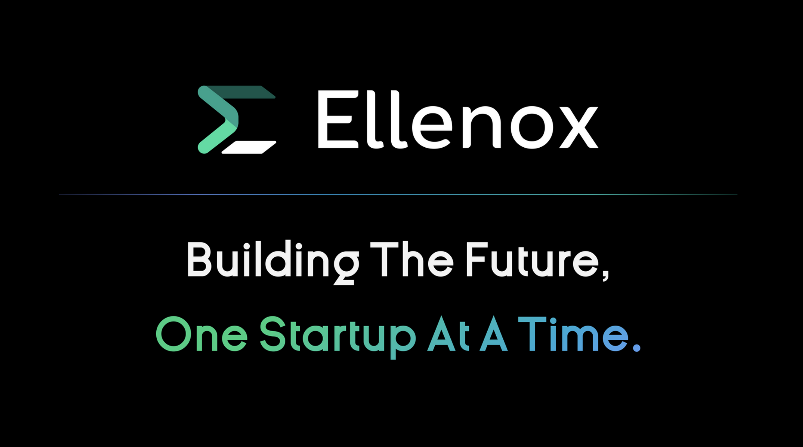

Ellenox
Ellenox is not a traditional accelerator. It is more of a venture studio and startup product lab for founders who want execution help, not just mentorship.
Instead of running a fixed cohort, Ellenox works as a hands-on partner by embedding product, engineering, and go-to-market teams directly into startups.
This model can be especially useful for early-stage tech startups that need direct building support.